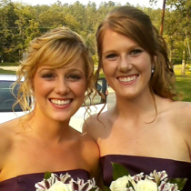
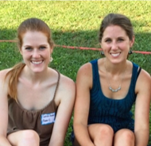
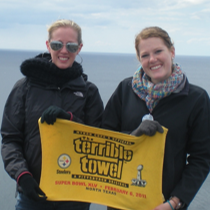
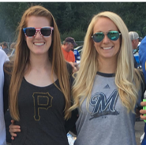
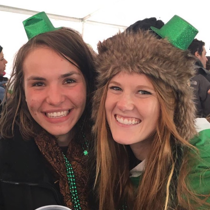
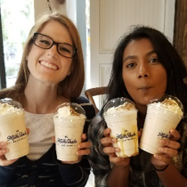
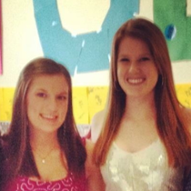
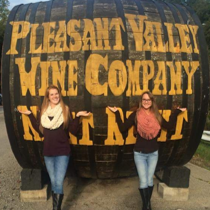
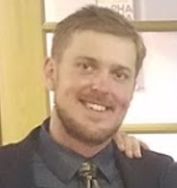

Regina Robb
Maid of Honor - I am Sarah's only younger sister. Sarah is about 18 months my senior, but I am lucky that my sister is more than that; she is my my friend and my caregiver even as we've grown. I'm successful today largely because of my beloved Sarah; I call her often for a chat, for advice, for comfort and a smile!

Kristin Wabiszewski
Matron of Honor - I am Kristin, Sarah’s second oldest sister and the other “middle child.” I have had the privilege of making Sarah an aunt and introducing her into the crazy world of little boys (which I am still figuring out myself!) To return the favor, Sarah is constantly introducing me to all the newest technologies that make me feel way older than 30 years old.

Erin Du Carme
Matron of Honor - I am Sarah’s oldest sister, the first-born of the “Robb girls.” We share a love to travel and experience new and exciting places, we enjoy long distance running and training for races, and we’re both eager for continuous learning and achievement. She might be my younger sister, but there are countless reasons why I look up to Sarah as a role model and inspiration.

Monica Frydach
Bridesmaid - I'm Kenny's older sister. I met Sarah the weekend of my wedding in January 2016. We have bonded through a love of running and baking!

Nicole Racine
Bridesmaid - Sarah and I are both doctoral students at Carnegie Mellon University and have bonded over many late night study sessions, sangria, and freshly baked goods. Sarah has been a cornerstone through my transition moving to Pittsburgh, and I'm thrilled to be with her on her special day.

Vanya Britto
Bridesmaid - Since I moved to Pittsburgh 2 years ago, Sarah has made this city feel like home. From spending time with her family, to feeling like yinzers exploring Pitty, to persevering through late night homework sessions, we've experienced so much in such a short amount of time. There's no one else with whom I'd rather endure a PhD, cheer on the Pens, and most importantly, go on a quest to find the best milkshake in Pittsburgh!

Kelly Joy
Bridesmaid - Sarah and I met through Nicole Kirkwood while we were all studying at Robert Morris University. We ended up becoming roommates during my junior year and Sarah's senior year and all lived together in Concord 106!

Nicole Kirkwood
Bridesmaid - I met my candy loving, free spirited, hard working friend through my cousin while on a trip to Kennywood junior year in high school. We bonded over gummy worms in the back seat of the car. A year or so later, we attended Robert Morris University together and the rest is history - especially with junk food and wine.
Dave Cannon
Best Man
Scott Mackie
Groomsman
Justin Russell
Groomsman
Eric Schneider
Groomsman

Jordan Banky
Groomsman
Cary Deiter
Groomsman

Drew Volbers
Groomsman
Pete Vicente
Groomsman